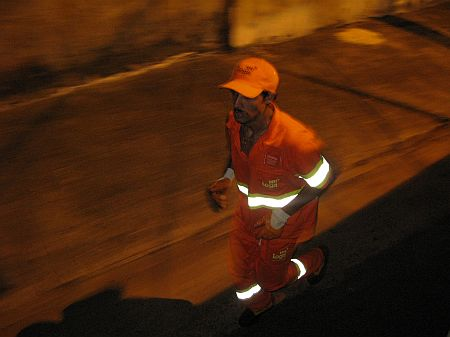
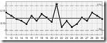
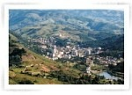
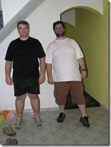
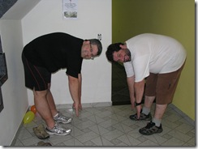

vamo, vamo, vamo…
Alecão
Engenheiro de Software que mora em Santo André-SP
Home page: http://www.dundes.com/wiki/Alex/HomePage
Jabber/GTalk: alex.dundes@gmail.com
Posts by Alecão
Atletas no lixo
0
Atletas no lixo
O Claudio acabou de enviar esta notícia, gostei bastante e resolvi postar o link dela aqui: Atletas no lixo.
Quarto treino, começando a me acostumar
28 years
by Alecão
in Ex-sedentário
Ontem, trabalhei em home-office e as 11:30 minha Internet caiu. Aproveitei a após o almoço fui treinar. Fui a pé até o gramado e treinei por 36 minutos. Desta vez não foi cansativo, acredito que meu corpo esta se acostumando com o exercício, mais ainda é cedo para começar a treinar todo dia, ainda vou continuar no dia sim, dia não até ter confiança.
Quanto a Internet, foi voltar só as 16:00, tive que ficar até mais tarde para compensar… Eu odeio a NET! 🙂
Fora de especificação
48 years
by Alecão
in Ex-sedentário
 Ontem não treinei, estou treinando dia sim, dia não. E aproveitei para ir comprar roupa. Fui no shopping e, apesar de óbvio, insisti na idéia esdruxula de visitar as grandes lojas (Renner, C&A e Riachuelo). Procurando calça, nem olhava o modelo e preço, ia direto no tamanho…48, 46, 46, 52, 50, 50, 48… Puxa o maior valor era 52… isso para alguns modelos, foi assim nas 3 lojas. Na hora lembrei da época que fazia software para CEP (controle estatístico de processo), e me veio na cabeça: “eu estou Acima do LSE (Limite Superior de Engenharia)”, é importante fazer piada nestas horas.
Vamos procurar lojas para gordos então, pensei. Ao penguntar, fui informado de 3 lojas para mulheres obesas e nenhuma para o público masculino. Vai entender.
A salvação foi a Riachuelo que tinha UM cabideiro com uma plaquinha em cima: Tamanhos Especiais. Difícil ler a palavra “especial” nesses casos, escreve logo “Para Gordos”, ficaria melhor. Nesse cabideiro tinha 2 tipos de calça, 1 jeans e 1 social e 2 camisas sociais. Peguei calças 56 e 58… Fiquei feliz que a 58 ficou enorme em mim, a 56 ficou boa, confortável… Pois então estou a 4 pontos acima do LSE.
Terceiro treino, devolta ao gramado
68 years
by Alecão
in Ex-sedentário
Ontem, estava animado para trotar, mas quando cheguei em casa, jantei e fiquei com uma preguicinha básica. Bastava um “Alex fica aqui” ou um “Pai brinca comigo” que eu desistiria na hora, mas ao contrário disso escutei “Quer que eu pegue sua roupa para você caminhar” e saiu um “Sim” da minha boca. Basta um pequeno empurrãozinho.
Fui de carro pois ele já estava fora da garagem e precisava guardar-lo. Deixei bem do lado do gramado onde andei na primeira vez. Estava uma brisa gostosa típica de quando vai chover (e não deu outra), coloquei o boné para trás e tive a sensação, mesmo trotando devagar que estava correndo, a sensação é boa. Mas por alguma razão o treino ontem foi mais difícil, meu corpo queria parar e a mente não. Consegui 30 minutos com bastante sacrifício. Mesmo não tendo a vista de Águas de Lindóia, mas o gramado perto de casa vale a pena porque é bem cuidado.
Segundo treinamento e em Águas de Lindóia
38 years
by Alecão
in Ex-sedentário
Foi uma semana difícil, prometi a mim mesmo que faria 3 treinos semanais e depois do primeiro, passou-se vários dias e nada. Minha mulher me chamou para ir para Águas de Lindóia, minha irmã já tinha ido e estava hospedada em um hotel e eu e minha família fomos na sexta a noite.
No sábado, acordei super animado, acredito que foi o ar da cidade, as acomodações, deixei as crianças na piscina e fui para fora do hotel…
Caminhei um pouco e cheguei na avenida principal, encontrei minha irmã na rua e ela disse “vai para a direita, até o fim”. Liguei o cronômetro e fui. Chaqualhando o barrigão no melhor estilo que o Claudio conta no post anterior, é possível ver na cara das pessoas passando pela rua a cara de interrogação. Decidi não tentar advinhar o que elas estavam pensando, acho que iria ficar louco.
E fui pela avenida como a maninha havia dito… E encontrei uma praça com chafariz, patos, cisnes negros, muitas árvores, muitas crianças… Aquilo me animou bastante e continuei trotando, a praça tinha vários caminhos calçado e fiz um zigue e zague por todos os caminhos, subida / descida, hora cansava, hora acomodava. Depois voltei para a avenida em direção ao hotel, ao sair da avenida, olhei para o cronômetro, 27 minutos, pensei, quero completar 30 e fui, era subida até o hotel, encarei e fui… Estes 3 últimos minutos foram os mais difíceis, cheguei no hotel com a lingua pra fora e pensando, Alex cuidado com o coração! 🙂
Mais uma vez percebo que até o vigésimo minuto você luta contra a tentação de parar, mas a partir do vigésimo uma sensação boa te empurra para frente. A verdade é que estou me controlando para não passar de 30, pois ainda não tenho condições físicas para isso.
A volta para o hotel teve a recompensa da piscina quente que eu aproveitei para alongar as pernas. Elas doeram bastante após o treino, mas de tarde já não mais doiam, bem diferente do primeiro treino que levou mais de 3 dias para parar de doer. Estou bastante entusiasmado e lendo o post anterior do Claudio me animou mais ainda para continuar. A meta de 3 treinos por semana ainda precisa ser batida. E vamos tirar a bunda da cadeira!!! 😉
Quero matar um…
28 years
by Alecão
in Ex-sedentário
Ontem, estava todo feliz e contente, jantei só um pouquinho, troquei de roupa e fui buscar o tênis que tinha deixado na lavanderia.
O tênis estava em uma bacia cheia d’agua, bem encharcado. Só tenho esse tênis. Chorei de raiva. Detalhe, ninguém colocou o tênis na bacia com agua.
Lavei o tênis e pendurei no varal, hoje de manhã estava chovendo. Vai entender. Cintrifuguei e coloquei atrás da geladeira, hoje a noite vai… Nem que a vaca tussa.
Começou…a doer minha perna
28 years
by Alecão
in Ex-sedentário
Ontem o Claudio me convidou para iniciar a saída do sedentarismo, fez por um post e depois me ligou reforçando o convite. De imiediato eu recusei, era meu aniversário e não sabia se algum parente viria me visitar… Ele insistiu uma vez, insistiu duas, na terceira topei. No começo é necessário um empurrãozinho mesmo. A falta de coragem foi apenas ontem mesmo, hoje já acordei motivado a começar. Pois ele me ligou e disse que viria mesmo. E veio de longe e pegou um puta transito. Pois jantamos uma lasanha deliciosa que a Andrea (minha mulher) preparou, claro que comi apenas um pedaço e na sequência batemos a foto do “ANTES”, falei para o Claudio para sorrir, não tem nada a ver esta estória de gordo triste que a mídia prega.
Batemos outra foto esticando o máximo que conseguimos e ficou longe do chão, muito longe.
Saímos, subimos uma ladeirinha perto de casa e atravessamos a avenida e o Claudio vislumbrou um gramado que havia ali. Ficou encantado e eu sem entender e ele logo me explica que por conta do excesso de peso, a grama ajudaria a não afetar as articulações. Cronometro acionado e começamos a trotar. Logo ele me controla: “passos mais curtos, passos mais curtos” e fui entendendo o que vinha ser o runyoga (nome difícil de acostumar). O Claudio foi falando e me explicando como deve ser o começo e como ir aumentando conforme o tempo passa.
 A sensação é do dever cumprido e de ansiedade pela longa jornada que vem por ai, deu para soar bastante, ficar bem vermelho, meus bícepes estão doendo nesse momento e sinto a parte traseira da coxa latejando. Primeiro desafio cumprido, foi oficializado a abertura com direito a foto.
A sensação é do dever cumprido e de ansiedade pela longa jornada que vem por ai, deu para soar bastante, ficar bem vermelho, meus bícepes estão doendo nesse momento e sinto a parte traseira da coxa latejando. Primeiro desafio cumprido, foi oficializado a abertura com direito a foto.
E para fechar com chave de ouro, depois teve os parabéns com bolo de chocolate que juro que comi apenas um pedaço. 🙂
Começando…
38 years
by Alecão
in Ex-sedentário
A idéia do Blog Ex-sedentário surgiu a algum tempo, mas eu justificava que faltava tempo para contruir-lo. Finalmente resolvi manter a bunda na cadeira e começar para enfim tirar a bunda da cadeira. Quero que o blog sirva como desabafo para os momentos difíceis e de companherismo entre os que postam. A motivação final para construir veio de um bate papo entre eu (Alecão) e o Claudio, que eu replico abaixo:
Claudio diz:
Rapidinha do Cláudio: O Claudinho está com 129 quilos na balança do Cardiologista (que pesa no mínimo três quilos menos que uma na rua) e em 23 de junho teve AMNÉSIA. Agora mais tranquilo por causa de um ansiolítico FAIXA vermelha, está mais calmo e pasme-se vai voltar a correr, mesmo não conseguindo fazer dieta corretamente. Suicídio? Talvez! Para tal loucura ele está usando a runyoga
Alex diz:
WTF runyoga?
Claudio diz:
http://www.atividadefisica.net/runyoga.htm colei a tabela no guarda roupa e ontem tentei sem sucesso fazer o primeiro treino. Vai pelo menos uns 10 dias para eu conseguir, mas conseguirei.
Alex diz:
abrindo link…
Alex diz:
Vou ver se faço um, sobre nossas experiências, para nos motivar… o que acha?
Alex diz:
“um blog”
Claudio diz:
eu acho uma excelente idéia
Alex diz:
Escolhe um nome… eu imaginei “Ex-Sedentários”… o que acha?
Claudio diz:
Excelente, porque só atingirei a minha meta incial (que é dormir) quando deixar de ser sedentário,
Alex diz:
FEchado, até o final do dia te passo um link e login e senha. Vai me ajudar tb… to berando os 135 já
Claudio diz:
alekão amnésia é foda, durou das 16:00 horas até a hora que fui dormir
Claudio diz:
e olha quanto a corrida de nome feio e duvidoso, pode botar fé
Claudio diz:
porque ele funciona para incutirmos a ideia de devagar e sempre, treino prazeroso mesmo em paisagem feia. Isso é um mola na motivação
Claudio diz:
aproveite e leia o livro do nuno cobra no tópico corrida intermediária, é a mesma coisa
Alex diz:
vou procurar ler sim
Claudio diz:
e aguardo o link, pois já tenho o que escrever de ontem, data do inicio 04.08
Alex diz:
Tenho que resolver 2 problemas aqui, na sequencia focarei no blog.
Claudio diz:
ok
Alex diz:
Esta conversa será o primeiro post…
Claudio diz:
ok
.jpg "DSC01754 (1024x576)")
.jpg "DSC01780 (1024x576)")
.jpg "DSC01869 (1024x576)")
.jpg "DSC01873 (1024x576)")
.jpg "DSC01951 (1024x576)")


{kind=link}
{kind=link}
Últimos comentários